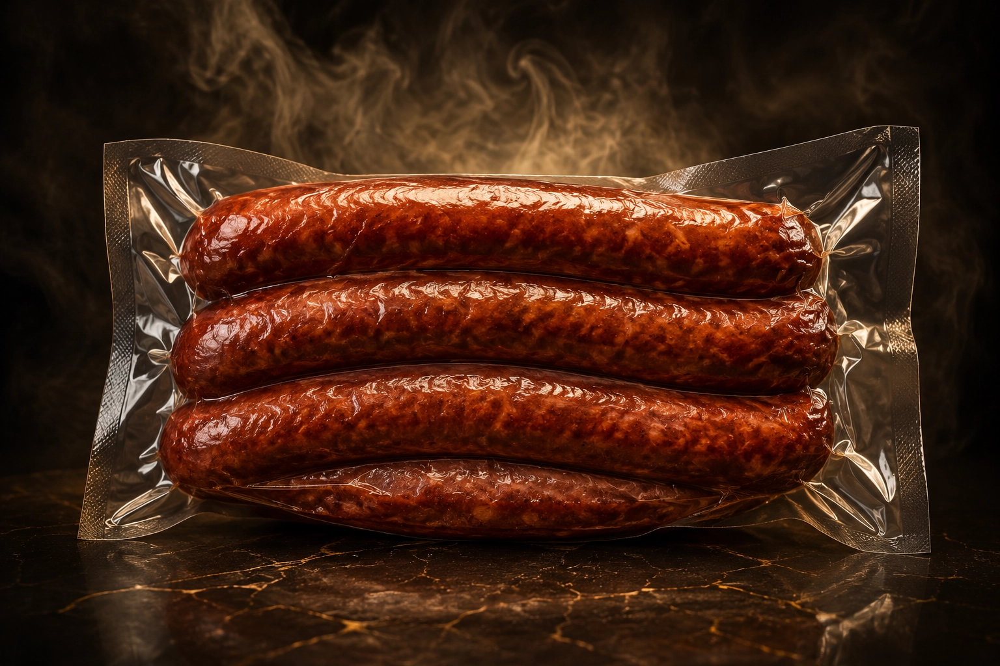

Best SellerSmoked Colombian Chorizo
Our signature product. Handcrafted Colombian-style pork sausages, seasoned with fresh scallions, garlic, and cumin, then slow-smoked using select sweetwoods. Offers a rich, savory bite with a crisp natural casing.